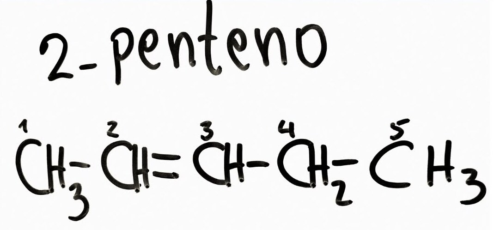

Então se tivermos a seguinte cadeia carbônica:

Temos três carbonos na cadeia principal, logo devemos usar o prefixo "prop"
O tipo de ligação é simples, logo o infixo será "an"
Finalizando a nomenclatura temos: prop + an + o = propano
prefixo para o Nº de C + infixo + "o"
Então se tivermos a seguinte cadeia carbônica:
Temos três carbonos na cadeia principal, logo devemos usar o prefixo "prop"
O tipo de ligação é simples, logo o infixo será "an"
Finalizando a nomenclatura temos: prop + an + o = propano
É a cadeia com maior quantidade de carbono e que, se o hidrocarboneto tiver uma insaturação
este deverá obrigatoriamente fazer parte da cadeia principal.
Devemos enumerar os carbonos a partir do carbono mais próximo à insaturação
Assim teremos que indicar em qual carbono está a insaturação, portanto:
2 - penteno

Algumas das principais ramificações são:


No hidrocarboneto acima temos um metil (CH3) pendurado à cadeia principal
no carbono 2. Logo escreveremos a nomenclatura da seguinte forma:
2 - metil
propano